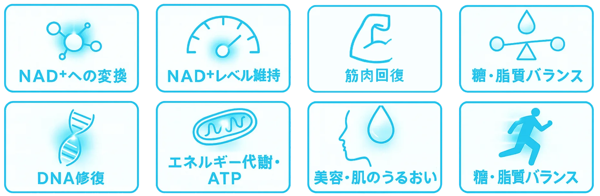

プロが選ぶ信頼で、
あなたの美しさと
パフォーマンスを支える
日本のバレーボール得点王
- 宮浦健人
私たちのNMNは国際的なアンチドーピング認証を取得しており、サッカーや野球をはじめとする多くのプロアスリートも愛用中。世界が認める安全性と確かな品質が、最高のパフォーマンスと美しさをサポートします。
.webp)
NMNとは
プロが選ぶ信頼で、あなたの美しさとパフォーマンスを支える
NMNとは「ニコチンアミド・モノヌクレオチド」という物質の 略です。体内にあるビタミンB3（ナイアシン）から作られる物質で、私たちの体の中にもともと存在しています。 NMNは体内でNAD⁺（ニコチンアミド・アデニン・ジヌクレオ チド）という補酵素に変換されます。 加齢とともに体内のNAD⁺は減少します。それが疲れやすさ・肌の老化・代謝の低下につながると考えられています。NMNを補う ことで、このNAD⁺の量をサポートできるのではないか、と研究が進んでいます。
NMNは食品で摂取するのは難しい
NMNはサプリで補おう
通常の食品からNMNを十分に摂取しようとすると、ほうれん草やブロッコリーなどにごく微量しか含まれていないため、現実的には膨大な量を食べなければなりません。つまり食品からの摂取は非常に難しいのです。その点、サプリメントであれば効率的に必要量を補うことができ、日常生活に無理なく取り入れられます。
サプリでNMNを摂ることにより、体は効率よくエネルギーを生み出せるようになり、日常の疲労感を和らげたり、持久力を維持したりといった効果が期待されます。また、肌の細胞にも働きかけるため、ハリや弾力を保ち、紫外線や酸化ストレスによるダメージ修復を助けるなど、美容面でもメリットがあります。さらに、脳の神経細胞にも関わるため、集中力や記憶力といった認知機能の維持にもプラスに働く可能性が指摘されています。
つまりNMNサプリは、食品からはほとんど摂れない成分を効率よく補いながら、体全体の若々しさを内側から支える存在として注目されているのです。
NMNヴィオテール
1粒にNMNを125mg配合し、ビタミンB2と組み合わせることで体内での働きをより効率的にサポートします。 NMNは「若々しさや活力をサポートする成分」、ビタミンB2は「脂質や糖質を効率よくエネルギーに変える成分」です。この2つを一緒に摂ることで、美容と健康の両面からアプローチできます。高純度で品質に優れたWBNO®NMN原料を採用し、安定性や安全性にもこだわっています。のみやすい小粒タイプで、耐酸性被膜を採用しているため成分をしっかり腸まで届けることが可能です。さらに、アンチドーピング認証取得しているので、アスリートの方にも安心してお飲みいただけます。日々のパフォーマンス維持を支える、信頼性の高いサプリメントです。
※ 2ヶ月分で税別4,000円
アンチドーピング
認証原料
私たちのサプリメントに使用しているWBNO® NMNは、世界的品質管理機関であるイギリス・LGC社のインフォームド認証を取得した高品質原料です。 この認証は製造ロットごとに全成分を分析し、禁止物質が一切含まれていないことを証明する世界基準のアンチドーピング認証であり、トップアスリートも安心して利用できる品質保証となっています。 さらにWBNO® NMNは残留物も安全なビタミンB3とNRのみで、急性毒性試験や皮膚パッチテストにおいても安全性が確認され、厳格な機能性表示食品「プラズマ2020基準」でも受理されています。 毎日口にするものだからこそ、安全性を第一に考えたWBNO® NMNは、国際的にも認められた安心と信頼のNMN原料です。
生まれた、高品質ＮＭＮ
「そばじまクリニック」の傍島先生にご協力いただいております。
そばじまクリニック 院長 傍島 聰 様
変化を感じている方
こんな方におすすめ
集中力を維持したいとき
・疲れにくく、日中の
パフォーマンスを高めたいとき
ダメージから肌を守りたいとき
・ハリや透明感を保ち、年齢に
負けない美しさを目指すとき
持久力を維持したい
・疲労感を軽減し、翌日の
コンディションを整えたい
※ 2ヶ月分で税別4,000円
よくあるご質問
-
NMNは体内でNAD⁺に変換され、日常のエネルギー産生や美容・健康を内側から支える成分として注目されています。本サイトの「NMNとは」で詳しくご紹介しています。
-
通常の食事から必要量を摂るのは難しいため、効率良く補えるサプリメントの活用をおすすめしています。詳しくは「NMNはサプリで補おう」をご覧ください。
-
本製品はLGC社のインフォームド認証を取得したWBNO® NMN原料を採用。ロットごとの分析と厳格な基準で、トップアスリートにも安心の品質です。
-
疲れや美容が気になる方、仕事や勉強で集中力を保ちたい方、スポーツで持久力を維持したい方など、幅広い方におすすめです。「こんな方におすすめ」をご参照ください。
-
ページ内の「購入する」ボタンからご注文いただけます。2ヶ月分で税別4,000円のご案内です。